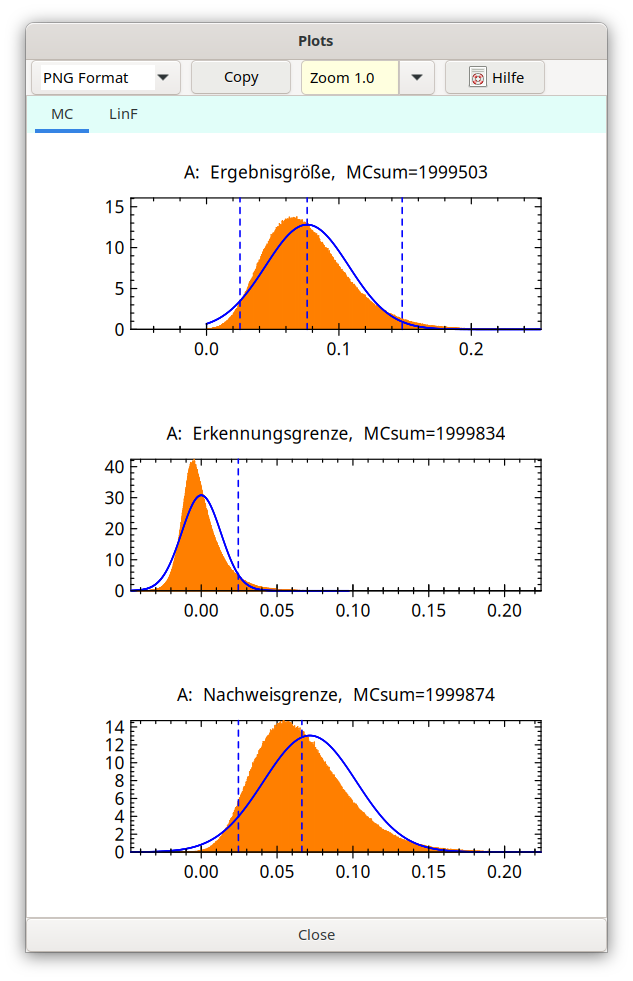
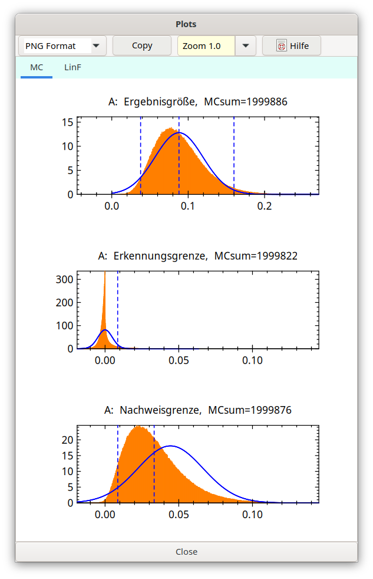
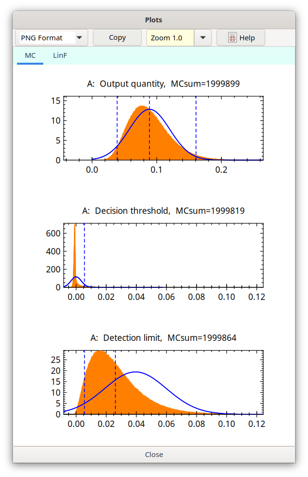

4.7. Low-Level-Anwendungen, (N+x)-Regel¶
Wichtig
Im Jahr 2024 stellte sich heraus, dass die (N+x)-Regel in ISO 11929 nicht klar formuliert ist. Somit könnte die beschriebene Implementierung in UR inkorrekt sein. Daher liegt die Entscheidung über ihre Anwendung beim Benutzer.
Sehr niedrige Impulsanzahlen N sind Poisson-verteilt statt gaußverteilt. Mit Bayes-Methoden lässt sich zeigen, dass die aus ihnen abgeleiteten Zählraten dann Gamma-verteilt sind. Ein als uniform angenommener Prior (Weise et al., 2009) führt für die Zählrate \(R\ \) zu einem Erwartungswert, der durch \(\widehat{R} = (N + x)/t_{m}\ \)charakterisiert ist, mit dem Wert \(u^{2}\left( \widehat{R} \right) = (N + x)/(t_{m}^{2}\ ) = \widehat{R}/t_{m}\ \)für ihre Varianz. Daraus folgt die Empfehlung, für den Fall sehr niedriger Impulsanzahlen \(N\) durch\(\ N + x\) zu ersetzen, was hier als die \(\left( \mathbf{N + x} \right)\) Rule bezeichnet wird und aus der Literatur lange bekannt ist.
Das Symbol x in (N+x) kann als Variable aufgefasst werden, die in UR als GamDistAdd bezeichnet ist. Dies führt zu einer Gamma-Verteilung der mit dieser Regel verknüpften Variable (Impulsanzahl), die aus Bayes-Sicht aus einem Prior folgt, der proportional zu 1/ρ ist (GamDistAdd=0.0), zu -1/2 (GamDistAdd=0.5) oder der konstant ist (GamDistAdd=1).
c=GamDistAdd |
(1-c) |
mean |
|---|---|---|
0 |
1 |
N+0 |
1/2 |
1/2 |
N+1/2 |
1 |
0 |
N+1 |
Hier wird angenommen, dass sich diese Regel nur auf die Bruttozählrate Rg und die Untergrundzählrate R0 bezieht, weil andere Arten von Zählraten üblicherweise auf andere, weniger direkte als eine Messung Weise bestimmt werden. Innerhalb des UncertRadio-Dialogs erfordern die Werte dieser beiden Zählraten keine Änderung, wenn die \((N + x)\) Rule direkt auf die Brutto- und Untergrund-Impulsanzahlen Nb bzw. N0 angewendet wird. Innerhalb des Programm-Codes wird folgende Ersetzungsregel angewendet:
Direkt vor einem Programmteil, der Berechnungen mit den Impulsanzahlen durchführt:
Nb is replaced by the term (Nb+ GamDistAdd),
N0 is replaced by the term (N0+ GamDistAdd).
After that program part: these replacements are removed.
The default value of GamDistAdd is 1.
Die Anwendung der (N+x)-Regel auf die beiden genannten Impulsanzahlen wird innerhalb des TABs „Values, Uncertainties“ dadurch verfügbar, dass „(N+x) rule” als Typ der Verteilung gewählt wird.
Hinweis: Nur für Impulsanzahlen-Variablen darf die (N+x) Regel gewählt werden; sie darf nicht für die zugehörigen Zählraten-Variablen gewählt werden. Letztere werden intern in dieser Weise behandelt und sind dadurch ebenfalls gamma-verteilt. Dies bedeutet, dass diese Regel korrekt nur anwendbar ist, wenn eine Zählrate R durch eine Gleichung R=N/t definiert ist, die die zugehörige Impulsanzahl N enthält. Für N wird nur ein Wert vom Benutzer angegeben, während das Feld für die Unsicherheit leer zu lassen ist; diese, durch die Gamma-Verteilung erhaltene Unsicherheit wird dann intern berechnet.
Zwei Beispiel-Projekte (Gamma-Dist_EN.txp und Lira_gammdist_EN.txp) demonstrieren die Anwendung der (N+x) Regel für den Fall sehr niedriger Impulsanzahlen.
Wichtig
In Erwartung der neuen Version von ISO 11929:2019 wurde die Anwendung der (N+x)-Regel wie folgt geändert. Abgesehen von einer einzelnen Ausnahme wird in (N+x) x=0 verwendet. Die Ausnahme ist N=0: dann wird x=1 verwendet. Dies erfordert, dass die Variable GamDistAdd auf null gesetzt sein muss (Optionen – Voreinstellungen). Unter dieser Voraussetzung, x=GamDistAdd=0, addiert UncertRadio intern nur dann 1 zu N, wenn N=0 (dies bedeutet „0+1”). Dies bedeutet, dass für N>0 für die zugehörige Zählrate R eine Gamma-Verteilung mit prior(R) ~ 1/R angewendet wird. Im Gegensatz dazu wird für N=0 ein uniformer prior(R) angenommen.
Wurde jedoch x=GamDistAdd auf einen Wert > 0 gesetzt, was für bereits existierende UR-Projekte zutreffen kann, so wird er immer zu N addiert, auch für N>0.
Es wird angenommen, dass die (N+x) Regel nur bei Messverfahren verwendet werden darf, die keine Methode der kleinsten Quadrate erfordern – und nur bei sehr niedrigen Impulsanzahlen. Für Verfahren mit der Methode der kleinsten Quadrate auf niedrige Impulsanzahlen wäre das Anpassungsergebnis fragwürdig; in diesem Fall, in dem die Poisson-Verteilung verwendet werden muss, wäre die Methode der kleinsten Quadrate verzerrt und es müsste z. B. die Poisson-Maximum-Likelihood-Estimation angewendet werden.
Mit dem folgenden Beispiel, basierend auf Gamma-Dist_EN.txp, soll demonstriert werden, dass die Anwendung der MC-Simulation zu asymmetrischen, wesentlich von der Normalverteilung abweichenden Verteilungen führen kann.
Die Gleichungen lauten wie folgt:
A = phi * Rn
Rn = Rg - R0
Rg = ng / t
R0 = n0 / t0
The (N+1) rule is selected for the quantities ng and n0.
Der Ausgangsfall sei gegeben durch: Phi = 1, urel(Phi) = 0,1, t =100 s und t0 = 500 s sowie ng = 8 Impulse und n0 = 6 Impulse, d. h. Rg = (8+1)/100=0,09 s-1 und R0 = (6+1)/500=0,014 s-1. Die MC-Simulation führt zu der folgenden Triple-Grafik, die eine leichte Asymmetrie der simulierten (grünen) Verteilungen zeigt:

Abb. 4.7.1 Starting case¶
Jetzt wird gegenüber dem Ausgangsfall als Einziges die Messdauer t0 der Nulleffektzählrate auf t0=100*tm erhöht (ein in der Praxis unrealistischer Fall), auf z.B. 10 000 s, d.h. man macht R0 sehr klein, erhält man speziell für die Verteilung der Erkennungsgrenze eine extrem asymmetrische Verteilung, die nur ganz wenig in den negativen Bereich hineinragt, also ganz anders als z.B. bei MC-Details gezeigt.

Abb. 4.7.2 n0 set to null¶
Als dritter Fall wird gegenüber dem Ausgangsfall nur die Untergrund-Zähldauer t0 auf einen Wert von t0 = 60t = 10000 s erhöht (ein in der Praxis selten anzutreffender Fall), was die Untergrundzählrate R0 sehr klein macht; insbesondere für die Erkennungsgrenze erhält man eine sehr asymmetrische Verteilung, von der nur ein sehr kleiner Teil im negativen Bereich liegt. Diese aus der Gamma-Verteilung entstehende Form unterscheidet sich erheblich von dem, was man üblicherweise hat, wie z. B. gezeigt unter Ermittlung der MC-Verteilungen und daraus abgeleiteter Kenngrößen im Detail.

Abb. 4.7.3 t0 enlarged to t0=60 t¶
Der Grund liegt in der Tatsache, dass bei einer so kleinen Untergrundzählrate die Verteilung der Erkennungsgrenze hauptsächlich von der Bruttozählrate bestimmt wird, für die die Gamma-Verteilung für sehr niedrige Impulsanzahlen sehr asymmetrisch ist und immer positive mögliche Werte hat.